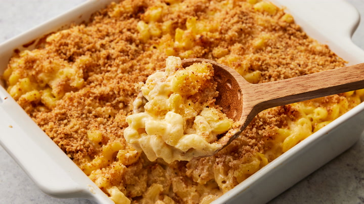

Homemade Mac and Cheese

Description
This homemade mac and cheese is topped with buttered bread crumbs for pure comfort food. It's easy to make the cheese sauce from scratch, starting with a roux and adding milk, Cheddar, and Parmesan to make a rich, decadent sauce that coats every nook and cranny of the noodles.
Ingredients
Mac and Cheese
- 8 oz uncooked elbow macaroni
- 1/4 cup salted butter
- 3 tablespoons all-purpose flour
- 2 1/2 cups milk
- 2 cups shredded sharp cheddar cheese
- 1/2 cup finely grated parmesan cheese
- salt and pepper to taste
Bread Crumb Topping
- 2 tablespoons salted butter
- 1/2 cup dry bread crumbs
- 1 pinch ground paprika
Steps
- Pre-heat oven to 350F.
- Grease 8 inch baking dish.
- Bring large pot of lightly salted water to boil.
- Add macaroni noodles and bring to a simmer. Stir occasionally until firm and tender. Usually about 8 minutes.
- Drain noodles and transfer to baking dish.
- melt 1/4 cup butter in a medium skillet on low heat.
- Whisk in flour until a light golden brown paste.
- Slowly whisk in 2 1/2 cups milk and bring to simmer.
- Stir in shredded cheddar and parm, season with salt and pepper. Stir until cheese is melted and thickend. Usually 3-5 minutes.
- Pour the cheese sauce over macaroni and stir until combined.
- Melt 2 tablespoons butter in a skillet over medium heat.
- Add breadcrumbs and stir until coated and brown.
- Spread bread crumbs over macaroni and cheese, then sprinkle with paprika.
- Put baking dish in over until the top is golden brown, and the cheese is bubbling. Usually about 30 minutes.
Main Page